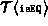
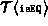

Data Structures and Algorithms
with Object-Oriented Design Patterns in Java
Data Structures and Algorithms
with Object-Oriented Design Patterns in Java
Program  defines the isMember
and find methods of the ListAsLinkedList class.
The implementations of these methods are almost identical.
However, they differ in two key aspects--the comparison used and the return value.
defines the isMember
and find methods of the ListAsLinkedList class.
The implementations of these methods are almost identical.
However, they differ in two key aspects--the comparison used and the return value.
Program: OrderedListAsLinkedList class isMember and find methods.
The isMember method tests whether a particular object instance is contained in the ordered list. It returns a boolean value indicating whether the object is present. The running time of this method is clearly O(n), where , the number of items in the ordered list.
The find method locates an object
which matches a given object.
The match is determined by using the isEQ method.
find returns a reference to the matching object if one is found.
Otherwise, it returns the null value.
The running time for this method,
is  ,
where  is the time required to do the comparison,
and is the number of items in the ordered list.
This simplifies to O(n) when the comparison can be done in constant time.
,
where  is the time required to do the comparison,
and is the number of items in the ordered list.
This simplifies to O(n) when the comparison can be done in constant time.
 Copyright © 1998 by Bruno R. Preiss, P.Eng. All rights reserved.
Copyright © 1998 by Bruno R. Preiss, P.Eng. All rights reserved.